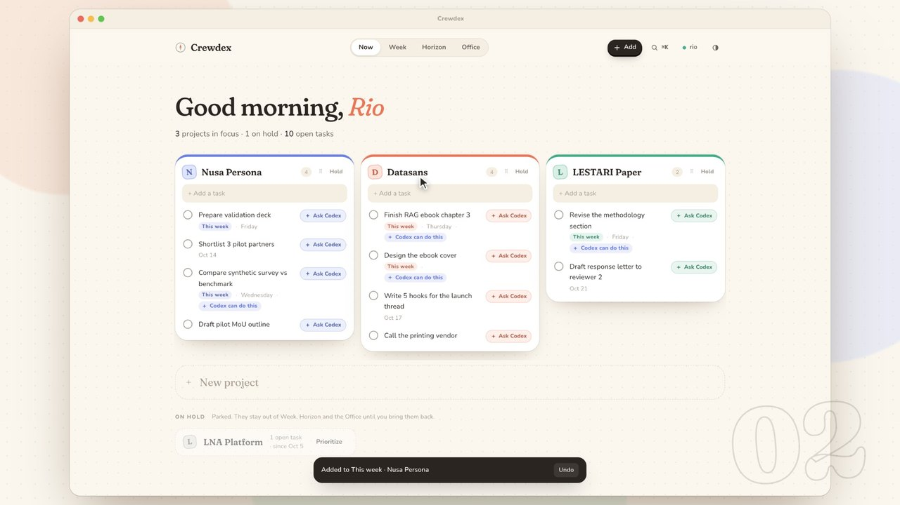
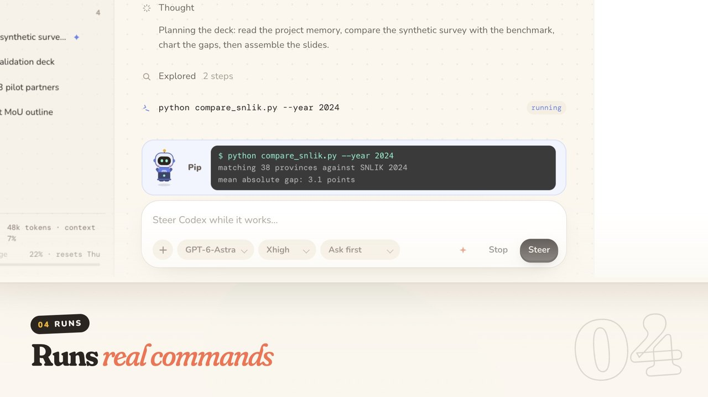
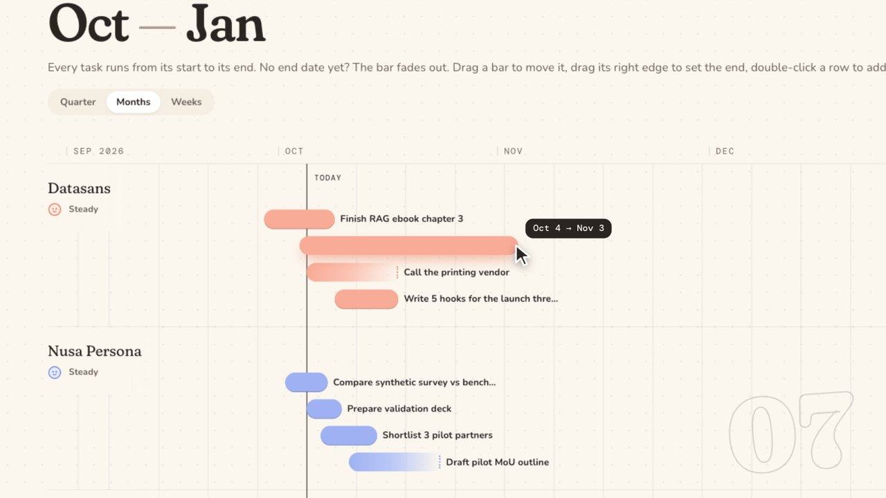
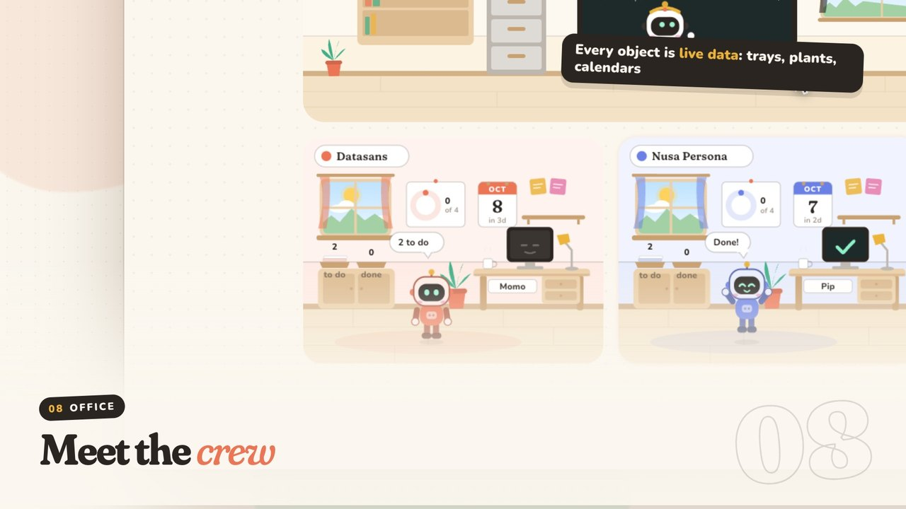

Codex, with a crew.
Crewdex is a project manager first. You write the projects and tasks. Any task can be handed to Codex, which works inside that project's own folder and remembers what it learned there.
curl -fsSL https://raw.githubusercontent.com/arifinrio95/crewdex/main/install.sh | bashPaste it into Terminal. macOS 13.3+ only. The AI features use the Codex CLI and your own ChatGPT plan. See everything you need
The film, 3:26, with sound. It records the real app against a scripted Codex with demo data; the model name shown is fictional.
What you need
Crewdex has no AI and no servers of its own. It is a Mac app that drives the Codex already on your machine, on your own account. Four things make it work.
A Mac
Crewdex is written in Swift for macOS and ships as one universal app. There is no Windows, Linux, iPhone or web version.
It takes about 5 MB of disk. Your projects are ordinary folders in ~/Crewdex.
The Codex CLI
Codex is OpenAI's coding agent. Crewdex starts its codex app-server in the background and talks to it; that is the same engine the Codex desktop app uses.
The easiest way to get it is the ChatGPT desktop app, which carries the CLI inside it. Or install it alone with npm i -g @openai/codex or brew install codex. Crewdex finds it automatically; you can also set the path in Settings.
Your ChatGPT plan
Every task Codex does runs on your account. Sign in to Codex with a ChatGPT account whose plan includes Codex, and usage counts against that plan's own limits. If you sign in with an API key instead, OpenAI bills that key.
Crewdex itself is free, adds no fee, and has no account or subscription. If Codex is already signed in on your Mac, there is nothing to do: Crewdex picks up the same login.
Internet, when Codex works
The models run at OpenAI, so a Codex task needs a connection. Projects, tasks, Week and Horizon are local files and keep working offline.
What Codex can do inside Crewdex, such as image generation, web search, Computer Use or document plugins, is whatever your own Codex setup and plan allow.
How it connects
Nothing is re-implemented. Crewdex is the planning and viewing layer; Codex does the work; your files stay in plain folders.
Write the plan
Projects as columns, tasks as rows. You decide what exists and what matters this week.
Crewdex.app
Sends a task to Codex with the project's memory, then renders every step, approval and result.
codex app-server
The Codex CLI. Reads and writes inside the project folder and runs commands, within the access you allow.
The model
Reached by Codex with your ChatGPT login. Crewdex has no server in between.
Everything is a file you own
Each project is a folder. Delete the app and the work is still there, readable without Crewdex.
~/Crewdex/<project>/ AGENTS.md Codex memory for this project artifacts/<task>/ what Codex produced .agents/skills/ project-only skills .crewdex/project.json the project and its tasks .crewdex/HISTORY.md one entry per session .crewdex/runs/<id>/ every step, replayable
You set how far Codex may go
Codex acts on your real Mac, so each project has an access mode, and each chat can override it.
- Ask firstDefaultEvery command and file change waits for your OK.
- Project folderFree to work inside the project folder; asks for anything beyond it.
- Full accessNo questions. Only for work you fully trust.
Crewdex shares ~/.codex with the Codex app and CLI, so your plugins, MCP servers and skills are already there.
What it does
A calm planner on the surface. A crew of agents underneath, when you want them.




Tasks are yours
You write them. Codex only touches the list when you ask it to break a task down or sharpen its wording.
Import from Codex history
Reads your past Codex sessions, groups them into projects, and brings their history and memory along.
Week and Horizon
Commit only what you will finish this week, and see every task on a timeline.
Ask Codex on any task
Break it down into who-does-what, or have Codex write an enhanced prompt from the project memory.
Model per chat
Pick model, reasoning level, access and attachments for each conversation, in a new session or an old one.
Approvals inline
Commands, file changes, extra permissions and questions show up in the chat, with one clear button.
Results you can open
Tables, diagrams, math and code are rendered. Click any file to preview PDFs, decks, charts, CSVs and images.
Project memory
Each project keeps its own AGENTS.md, sessions and final outputs, so the next session starts where the last stopped.
Skills
When a result turns out well, save the way it was made as a skill, for one project or all of them.
Install it
The first one is the one to use. The other two are there if you prefer to see every step.
One line
Downloads the latest release, puts Crewdex in Applications and opens it. Nothing else is installed.
Download the app
Unzip and drag to Applications. The app is not notarized by Apple, so the first launch is blocked until you run this, or press Open Anyway in System Settings → Privacy & Security.
Build it yourself
Needs only the Xcode Command Line Tools. No Xcode project, no package manager, no build step for the interface.
Questions
Is it really free?
Crewdex is free and open source under the MIT license. What is not free is Codex itself: it runs on your ChatGPT plan or your OpenAI API key, exactly as it would in the Codex app or the terminal.
Which ChatGPT plan do I need?
Any plan that currently includes Codex. Plans and limits are set by OpenAI and change over time, so check OpenAI's Codex page for what yours covers. Crewdex shows your remaining Codex usage in the chatroom.
Can I use it without Codex?
Yes, as a planner. Projects, tasks, Week, Horizon and the Office all work. The Ask Codex buttons wait until Codex is installed and signed in.
Does it work on Windows or Linux?
No. It is a native macOS app built on AppKit and WebKit, for macOS 13.3 and newer.
Where does my data go?
Your projects stay on your Mac in ~/Crewdex. Crewdex has no server, no analytics and no telemetry. The only request the app makes by itself is loading its typefaces from Google Fonts. Everything Codex needs goes from the Codex CLI on your Mac to OpenAI, under your own account and OpenAI's terms.
Why does macOS say the app can't be opened?
The app is signed ad hoc rather than with a paid Apple Developer ID, so Apple has not notarized it. The one-line installer avoids the warning. For a manual download, use the xattr command above or Open Anyway in System Settings. The full source is on GitHub if you would rather build it yourself.
Is it safe to let Codex run things?
Codex runs real commands on your Mac, so treat it like any agent. The default access mode is Ask first: every command and file change waits for your approval, shown inline in the chat. Loosen it per project only when you are comfortable.
How do I uninstall it?
Delete Crewdex.app. Your projects stay in ~/Crewdex until you delete that folder too. Your Codex setup in ~/.codex is not Crewdex's and is left alone.
Is this made by OpenAI?
No. Crewdex is an independent project. It is not affiliated with or endorsed by OpenAI.